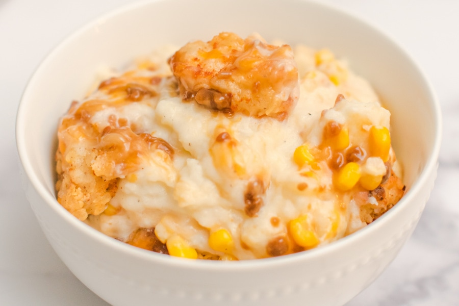

Chicken Mashed Potato Bowl Recipe

DESCRIPTION
The one side dish everyone can agree on? Creamy, buttery mashed potatoes. Not only are they easy to make, but they're also insanely delicious and only require a few basic ingredients.
INGREDIENTS
- 5 lbs peeled and diced russet potatoes
- 8 oz cream cheese
- ½ cup butter
- 1 teaspoon salt
- 1 teaspoon garlic powder
- ½ teaspoon pepper
- 2 cups of crispy chicken bites, nuggets or strips (store bought or homemade)
- 1-½ cups sweet corn
- 1 cup shredded cheddar cheese
- 1 package of brown gravy mix
STEPS
- Add diced potatoes to 8 cups of boiling water. Boil for 12-15 minutes or until potatoes become tender. Remove from water and drain.
- Add cream cheese, butter, salt, garlic powder and pepper to potatoes. Mix thoroughly until mashed potatoes creamy smooth.
- Grease bottom of 9×13 casserole dish. Layer bottom of dish evenly with mashed potatoes. Add chicken and corn evenly on top of the potatoes. Sprinkle with cheese and set aside and begin to preheat the oven to 350 degrees.
- Cook gravy according to package instructions.
- When gravy has completed cooking, pour over the dish evenly.
- Cook for 5-7 minutes or until the cheese has melted into the dish.
- Remove from the oven and serve immediately.